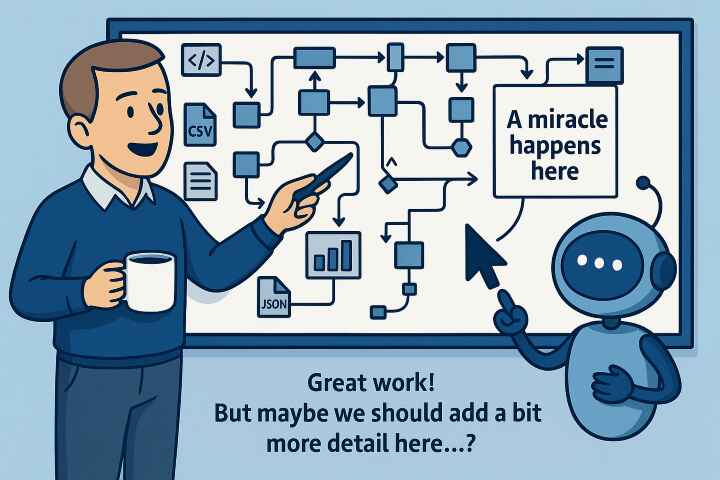

🌍 Earth Overshoot Day
Calculating the current status …
The world is changing – politically, socially, and ecologically. We often hear that “everything used to be better” and that “the world is going downhill.” RealityCheck aims to challenge that narrative — with facts instead of feelings. The central question is: How is our world really doing?
Nothing is god-given. Nothing is destiny. Humanity created the systems that shape our world – and humanity can change them again. Where there is will, there is a way. This project is about clarity, awareness, and hope.
As historian Yuval Noah Harari reminds us in his acclaimed series “Sapiens,” “Homo Deus,” and “21 Lessons for the 21st Century,” the world we live in is built on human imagination — our institutions, economies, and beliefs are stories we agreed to tell together. Because humanity created them, humanity can also change them. This insight connects RealityCheck with thinkers like Harari, Earth for All, and Hans Rosling’s Factfulness: a shared belief that understanding the world through facts is the first step toward improving it.
A symbolic expert assessment of human-made global risk, not a literal countdown or forecast.
The main challenges ahead are clear:
RealityCheck provides the data foundation for that transformation – understandable, comparable, and interactive.
There is an ocean of available data out there — thousands of indicators, each capturing just one small piece of reality. Without context, it’s easy to lose orientation. RealityCheck was built to change that.
The selected KPIs serve as a kind of magnifying glass – cutting through the data noise to focus on what truly matters for understanding human progress and planetary well-being. Each indicator was chosen based on three key principles: meaningfulness, reliability, and availability.
Meaningfulness ensures that the data says something about how people live, how societies function, and how the planet sustains us. Reliability guarantees that the numbers come from transparent, peer-reviewed, and regularly updated sources. And availability matters because insight without accessibility helps no one.
The most trustworthy data sources — such as Our World in Data and the World Bank — are therefore at the heart of this project. If you seek deeper information or want to explore a dataset in more detail, those platforms are the best place to start.
RealityCheck doesn’t try to show everything. It tries to show what’s essential — with clarity, consistency, and perspective.
If you discover an error or have an idea for improvement, I would be grateful to hear from you. You can reach me anytime via realitycheck.cw@gmail.com.
This project is the result of an unusual collaboration between human and AI – between myself, acting as business analyst, requirements manager, and tester – and ChatGPT, serving as developer and creative partner.
The first version of RealityCheck was created almost entirely through ChatGPT prompts. Everything happened in a browser: HTML, CSS, JavaScript, data structures, and even complex logic were drafted, refined, and reworked iteratively through natural-language instructions.
It was a surprising and fascinating experience: ChatGPT was incredibly creative, fast, and helpful in solving problems, but it required very precise instructions and constant reminders of the project structure, filenames, and data formats. Maintaining context over long sessions became part of the challenge.
What worked well:
What was challenging:
The second phase transformed the project from a chat-based experiment into a proper software development workflow.
I moved the entire system to GitHub, switched from plain text editors to a professional development environment (Visual Studio Code), and added automated scripts, file validation, and version control.
A major milestone was the integration of OpenAI Codex for coding support. Codex works directly on the repository, understands the folder structure, respects existing schemas, and does not “forget” format rules. It handles automation, testing, fetch scripts, and complex refactoring tasks with remarkable precision.
The improvements were substantial:
However, Codex has a different strength profile than ChatGPT: it is precise, structured, and technical — but much less creative. It writes excellent code, but it does not “think outside the box”.
That is why both systems remain essential: Codex for correctness and reliability, ChatGPT for creativity, UX suggestions, data explanations, and conceptual design. RealityCheck benefits from the combination of both worlds — creativity and structure, ideation and engineering.
RealityCheck became what it is today through a unique blend of human insight, conversational development, and AI-assisted engineering.
RealityCheck is a joint project by Carsten Winterling (Business Analyst, Requirements Manager, Tester) and ChatGPT (Programming, logic, and creative support).

I live near Cologne, Germany. I’m married and a father of three. Professionally, I’m the head of an IT division in an insurance company – a “techie” at heart who loves structure, data, and problem solving.
RealityCheck is a passion project – born from curiosity and a belief that data can tell a more hopeful story than headlines. The world is not doomed; it’s changing. And we still decide how.
Built through curiosity, patience, and collaboration –
with facts, reason, and optimism.
Carsten Winterling & ChatGPT
Cologne, Germany – 2025